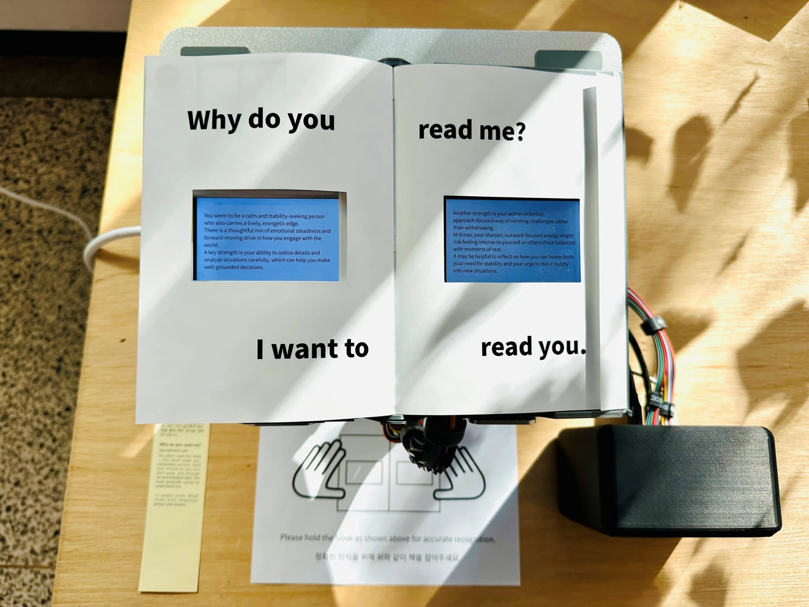
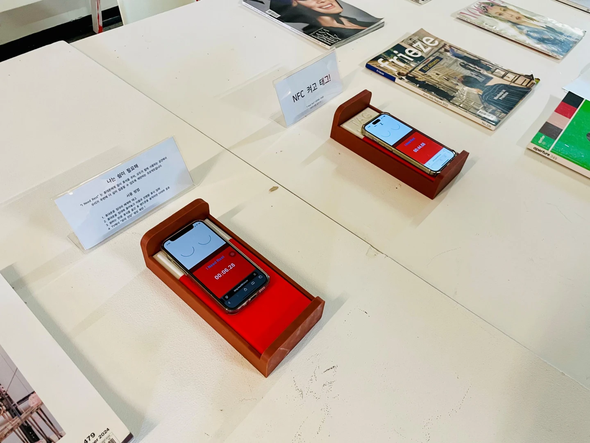
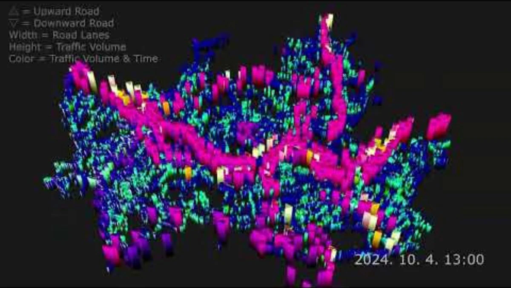

I Can See 2
Accessibility / Multisensory Interaction

A photo reader for blind and low-vision people. It turns photographs into detailed audio descriptions and concise Braille summaries, offering different ways to experience the same image.
PORTFOLIO
I explore how AI and physical interaction can expand human experience.
Accessibility / Multisensory Interaction
A photo reader for blind and low-vision people. It turns photographs into detailed audio descriptions and concise Braille summaries, offering different ways to experience the same image.
Tangible Interaction / Generative AI

An interactive book that reads its reader. Turning the pages answers reflective questions, and AI responds to the choices made along the way.
Gamification / Digital Wellbeing

A gamification project where people compete over how long they can put their phones to sleep. A small phone bed, a rest timer, and a shared leaderboard turn putting a phone down into a playful invitation to take a break.
Data Visualization / New Media

A visualization of Seoul’s traffic flow through the metaphor of cellular metabolism. Changing forms and colors reveal the city as a living organism.
Registered as: Wearable Device Track Pad Using Infrared Light
An infrared input concept that uses the thumbnail as an external trackpad for a wearable device.
Registered as: Stylus Pen
A stylus concept that converts writing pressure into magnetic signals for pressure and tilt input, without an internal battery.
Registered as: Apparatus and Method for Unlocking Screen of Terminal
A screen-unlocking method that recognizes a sequence of gesture directions, allowing the pattern to be entered at different positions on the screen.
Systems Biotechnology
Double Major in Photography
Minor in Nano-Convergence Engineering
Co-organizer and volunteer photographer
Gyeonggi Northwest Hana Center
Co-planned a formal portrait photography project for elderly North Korean defectors living alone. Photographed participants at the event on May 8, 2026.
Documentary photography project
In collaboration with Saeteo Church, Yangcheon-gu
Documented the lived experiences, memories, and personal narratives of North Korean defectors. Focused on individual stories and emotions beyond ideological categories.
Open Studio, Department of Photography
Chung-Ang University
Project: City of Organism
Awarded to my exhibition group
Open Studio, Department of Photography
Chung-Ang University
Project: Color Purple